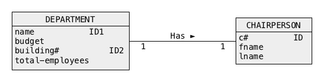

CUSTOMER(cnumber, first-name, last-name) PRIMARY KEY = (cnumber) ORDERS(onumber, odate, cnumber) PRIMARY KEY = (onumber) FOREIGN KEY = (cnumber) REFERENCES CUSTOMER(cnumber) LINE(onumber, lnumber, item, price total) PRIMARY KEY = (onumber, lnumber) FOREIGN KEY = (onumber) REFERENCES ORDERS(onumber)
CUSTOMER(cnumber, first-name, last-name, onumber, odate, cnumber, onumber, lnumber, item, price total) PRIMARY KEY = (cnumber, onumber, lnumber)
+---------+-------+-------+---------+-------------+---------+-------+-------+-------+ | cnumber | fname | lname | onumber | odate | lnumber | item | price | total | +---------+-------+-------+---------+-------------+---------+-------+-------+-------+ | +----------------------+ +---------------+ | | | | | | | 7 | James | Bond | | | 7 | 2017-01-01| | 1 | bolt | 23.04 | 5 | | | 7 | James | Bond | | | 7 | 2017-01-01| | 2 | screw | 29.01 | 3 | | | 7 | James | Bond | | | 7 | 2017-01-01| | 3 | nut | 4.55 | 2 | | | | | | | +---------------+ | | | | | | | 7 | James | Bond | | | 8 | 2018-01-01| | 1 | bolt | 23.04 | 1 | | | 7 | James | Bond | | | 8 | 2018-01-01| | 2 | screw | 23.04 | 1 | | | 7 | James | Bond | | | 8 | 2018-01-01| | 3 | nut | 23.04 | 2 | | | 7 | James | Bond | | | 8 | 2018-01-01| | 4 | lock | 23.04 | 1 | | +----------------------+ +---------------+ | | | | | +---------+-------+-------+---------+-------------+---------+-------+-------+-------+
+---------+-------+-------+---------+-------------+---------+-------+-------+-------+ | cnumber | fname | lname | onumber | odate | lnumber | item | price | total | +---------+-------+-------+---------+-------------+---------+-------+-------+-------+ | +----------------------+ +---------------+ | | | | | | | 7 | James | Bond | | | 7 | 2017-01-01| | 1 | bolt | 23.04 | 5 | | | 7 | James | Bond | | | 7 | 2017-01-01| | 2 | screw | 29.01 | 3 | | | 7 | James | Bond | | | 7 | 2017-01-01| | 3 | nut | 4.55 | 2 | | | | | | | +---------------+ | | | | | | | 7 | James | Bond | | | 8 | 2018-01-01| | 1 | bolt | 23.04 | 1 | | | 7 | James | Bond | | | 8 | 2018-01-01| | 2 | screw | 23.04 | 1 | | | 7 | James | Bond | | | 8 | 2018-01-01| | 3 | nut | 23.04 | 2 | | | 7 | James | Bond | | | 8 | 2018-01-01| | 4 | lock | 23.04 | 1 | | +----------------------+ +---------------+ | | | | | +---------+-------+-------+---------+-------------+---------+-------+-------+-------+
CUSTOMER(cnumber, first-name, last-name) PRIMARY KEY = (cnumber)
+---------+-------+-------+ | cnumber | fname | lname | +---------+-------+-------+ | 7 | James | Bond | +---------+-------+-------+
ORDERS(onumber, odate, cnumber) PRIMARY KEY = (onumber) FOREIGN KEY = (cnaumber) REFERENCES CUSTOMER(cnumber)
+---------+------------+---------+ | onumber | odate | cnumber | +---------+------------+---------+ | 7 | 2017-01-01 | 7 | | 8 | 2018-01-01 | 7 | +---------+------------+---------+
LINE(onumber, lnumber, item, price total) PRIMARY KEY = (onumber, lnumber) FOREIGN KEY = (onumber) REFERENCES ORDERS(onumber)
+---------+---------+-------+-------+-------+ | onumber | lnumber | item | price | total | +---------+---------+-------+-------+-------+ | 7 | 1 | bolt | 23.04 | 5 | | 7 | 2 | screw | 29.01 | 3 | | 7 | 3 | nut | 4.55 | 2 | | 8 | 1 | bolt | 23.04 | 1 | | 8 | 2 | screw | 23.04 | 1 | | 8 | 3 | nut | 23.04 | 2 | | 8 | 4 | lock | 23.04 | 1 | +---------+---------+-------+-------+-------+

+---------+-------+-------+---------+-------------+---------+-------+-------+-------+ | cnumber | fname | lname | onumber | odate | lnumber | item | price | total | +---------+-------+-------+---------+-------------+---------+-------+-------+-------+ | +----------------------+ +---------------+ | | | | | | | 7 | James | Bond | | | 7 | 2017-01-01| | 1 | bolt | 23.04 | 5 | | | 7 | James | Bond | | | 7 | 2017-01-01| | 2 | screw | 29.01 | 3 | | | 7 | James | Bond | | | 7 | 2017-01-01| | 3 | nut | 4.55 | 2 | | | | | | | +---------------+ | | | | | | | 7 | James | Bond | | | 8 | 2018-01-01| | 1 | bolt | 23.04 | 1 | | | 7 | James | Bond | | | 8 | 2018-01-01| | 2 | screw | 23.04 | 1 | | | 7 | James | Bond | | | 8 | 2018-01-01| | 3 | nut | 23.04 | 2 | | | 7 | James | Bond | | | 8 | 2018-01-01| | 4 | lock | 23.04 | 1 | | +----------------------+ +---------------+ | | | | | +---------+-------+-------+---------+-------------+---------+-------+-------+-------+
+---------+-------+-------+---------+-------------+---------+-------+-------+-------+ | cnumber | fname | lname | onumber | odate | lnumber | item | price | total | +---------+-------+-------+---------+-------------+---------+-------+-------+-------+ | +----------------------+ +---------------+ | | | | | | | 7 | James | Bond | | | 7 | 2017-01-01| | 1 | bolt | 23.04 | 5 | | | 7 | James | Bond | | | 7 | 2017-01-01| | 2 | screw | 29.01 | 3 | | | 7 | James | Bond | | | 7 | 2017-01-01| | 3 | nut | 4.55 | 2 | | | | | | | +---------------+ | | | | | | | 7 | James | Bond | | | 8 | 2018-01-01| | 1 | bolt | 23.04 | 1 | | | 7 | James | Bond | | | 8 | 2018-01-01| | 2 | screw | 23.04 | 1 | | | 7 | James | Bond | | | 8 | 2018-01-01| | 3 | nut | 23.04 | 2 | | | 7 | James | Bond | | | 8 | 2018-01-01| | 4 | lock | 23.04 | 1 | | +----------------------+ +---------------+ | | | | | +---------+-------+-------+---------+-------------+---------+-------+-------+-------+